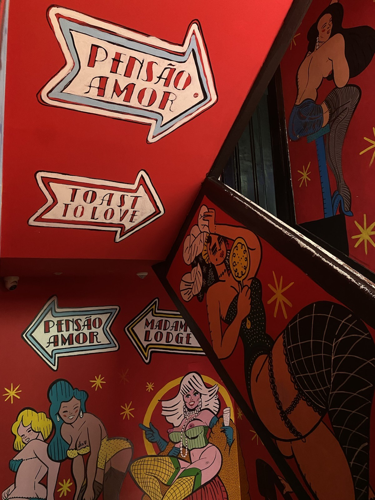
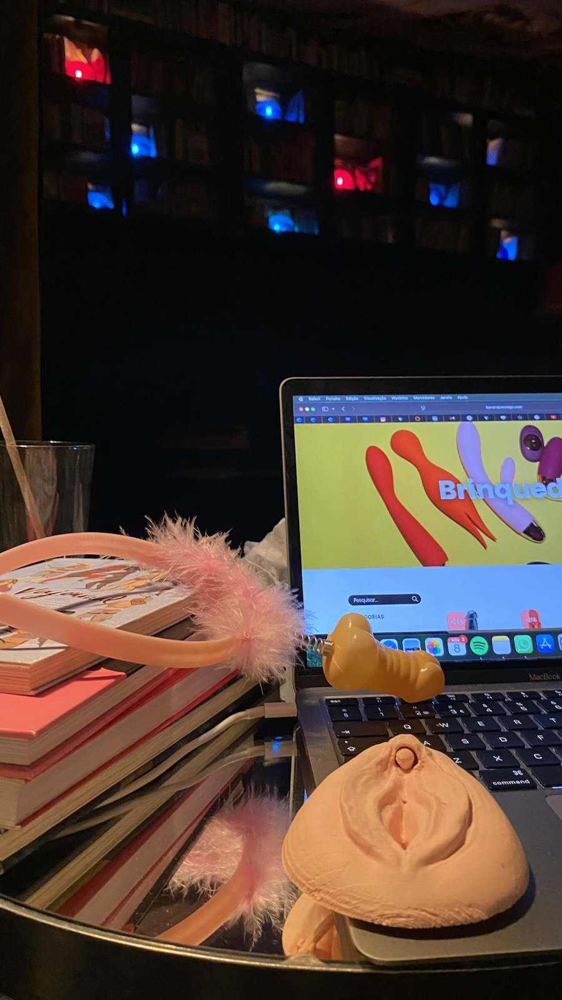
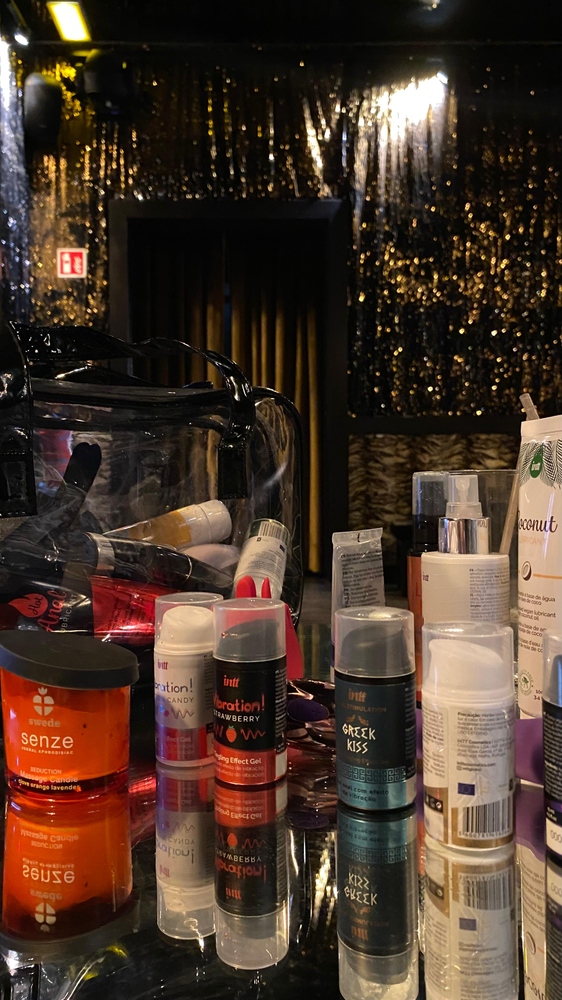
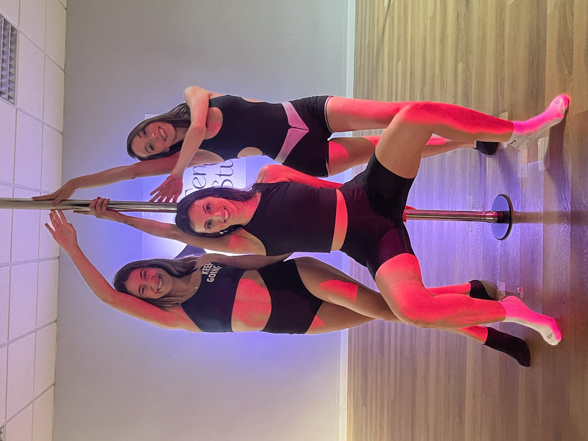
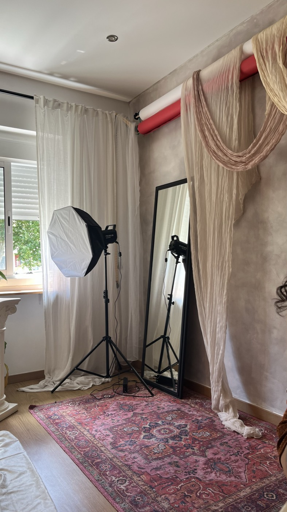
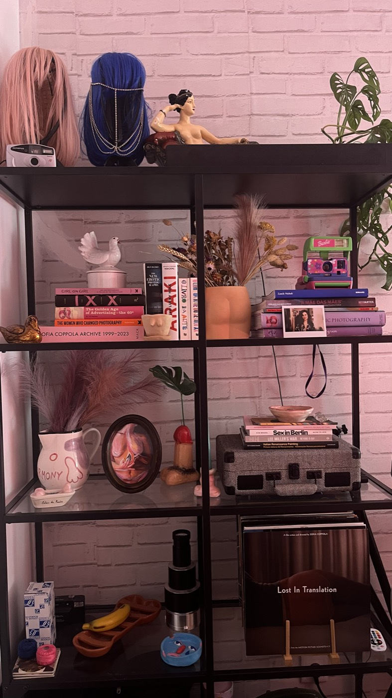
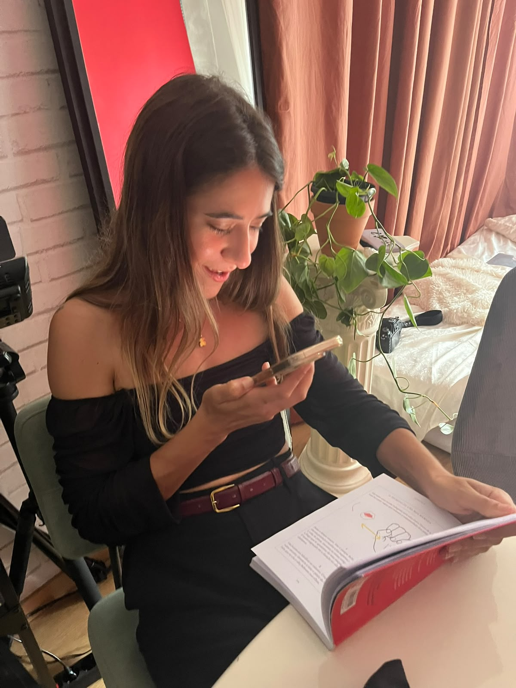
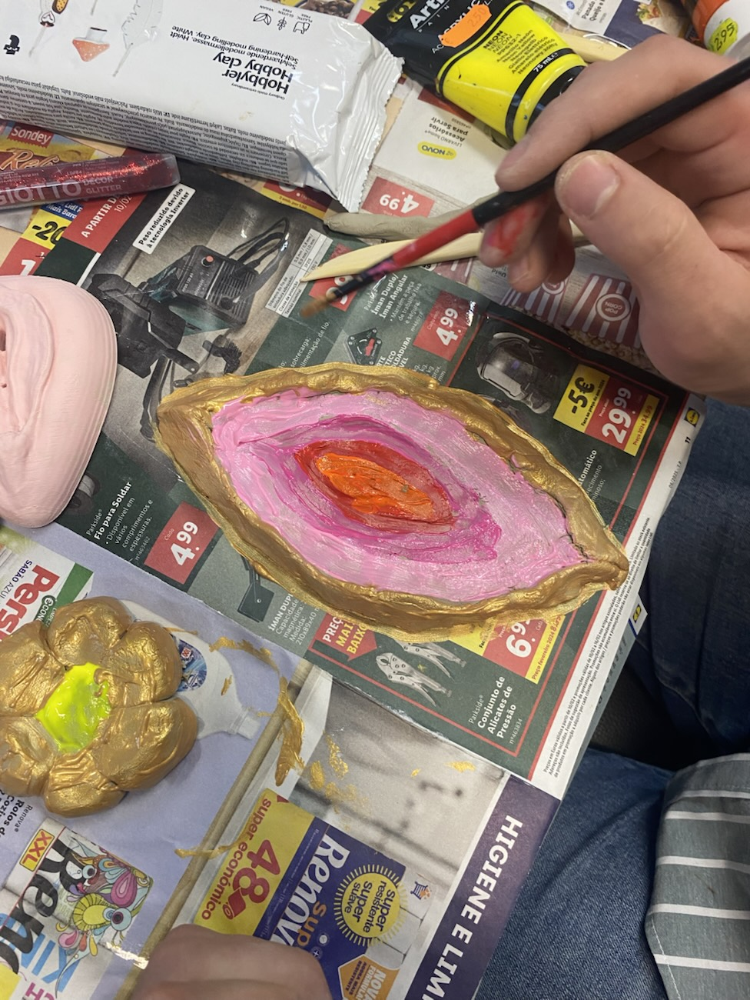
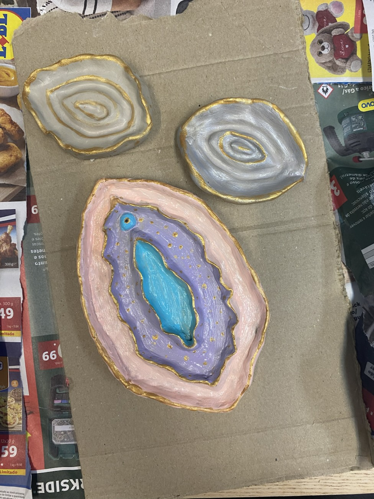

Eventos · Celebrações
Despedidas, Aniversários e Outras Celebrações Feministas
Despedidas, aniversários e outras celebrações, com tempo para aprender, conversar e rir.
Uma viagem, um dia, uma tarde ou uma noite, planeados à tua medida.

Porquê feminista?
Celebrar quem somos
Para mim, uma celebração feminista é um momento para estar com as tuas pessoas e celebrar as escolhas que fazes e a vida que constróis.
É também uma oportunidade para falar abertamente de prazer, corpos e relações, num espaço sem julgamentos, com tempo para aprender, conversar e rir.
Seja um casamento, um aniversário ou outra data especial, celebra com as tuas pessoas, celebra a amizade e celebra-te a ti.
O que inclui
- Organização de toda a experiência: uma viagem ou um único dia, tarde ou noite
- Plano totalmente personalizado, de acordo com as preferências da noiva, da aniversariante ou de quem organiza
- Acompanhamento da minha parte durante a experiência, se quiseres
Exemplos de atividades
- Sessão fotográfica boudoir
- Aula de pole dance ou high heels
- Sex & Toys Talk
- Tour feminista
- Drag show
- Erotic quiz
- Workshop de escultura, cerâmica ou pintura
- Recomendações de sítios para sair
- E muito mais, de acordo com as tuas preferências
Inspiração
Ideias para a tua celebração









Testemunhos
Nas palavras de quem celebrou comigo
Eu e as minhas amigas tivemos uma tarde incrível com a Mariana, da Soulful Cycles, no meu aniversário. A Mariana preparou uma visita à Pensão Amor seguida de uma sessão exclusiva para nós: um espaço sem julgamentos onde falar de prazer e sexualidade se torna um tema super natural e descontraído. Saí de lá a aprender imenso e muito mais consciente da importância da missão da Mariana.
Planeamento incrível da despedida de solteira, com fluidez entre os vários momentos organizados, tornando um dia incrivelmente divertido e leve!
Para os anos da nossa amiga, queríamos organizar uma experiência diferente e empoderadora. Falámos com a Mariana, que organizou uma experiência incrível! Fomos fazer uma visita guiada à Pensão Amor, seguida de um workshop sobre sexo, prazer, masturbação e tudo aquilo de que uma jovem mulher deve poder falar sem pudores. Uma experiência aberta, honesta e altamente enriquecedora. A repetir! Não podíamos recomendar mais a Mariana e estas experiências.
Perguntas frequentes
Sobre as celebrações
Quanto custa uma celebração?
Depende do que quiseres incluir. Conta-me o que imaginas e preparo uma proposta à medida :)
Como reservo a data e se precisar de cancelar?
A data fica reservada com um sinal de 30% do valor da proposta. Se cancelares com mais de 15 dias de antecedência, devolvo-te o que pagaste, exceto o sinal. Com menos de 15 dias não há reembolso. Vê os termos e condições.
Tem de ser uma viagem?
Não. Pode ser uma viagem ou um único dia, uma tarde ou uma noite.
Quem pode pedir a organização?
A pessoa que vai celebrar ou quem fica responsável por organizar. Se não és tu quem organiza, envia esta página a essa pessoa.
Vais estar presente na celebração?
Se quiseres, sim. O acompanhamento durante a experiência é opcional.
Contacto